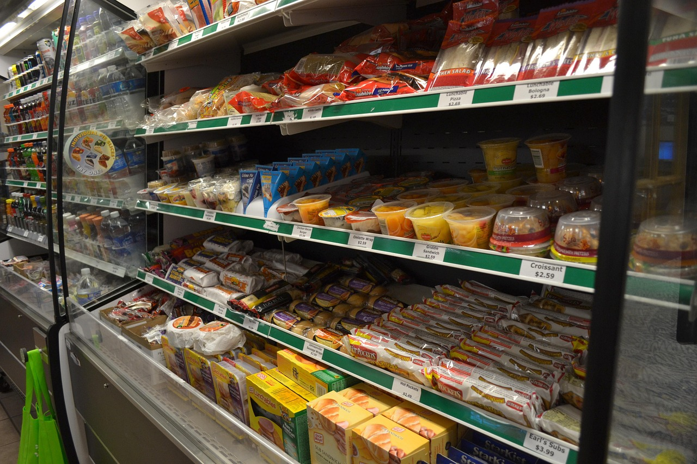

주제 편의점 PB가 제조사를 밀어내는 방식 (evergreen / brand)
제목 후보
메타 설명 편의점 PB가 제조사 브랜드를 매대에서 밀어내는 구조를 매대 장악, 데이터, 가격 결정권 중심으로 현장 사례와 함께 분석한다.
라벨 편의점PB, PB상품, 자체브랜드, 편의점트렌드, 가성비소비, 유통업계, CU헤이루, GS25유어스, 세븐일레븐PB, 편의점PB가격, 제조사브랜드경쟁
실용 자산 계산·기준 표 — PB와 제조사 브랜드의 구조적 차이(유통, 가격결정권, 데이터, 진열)를 한눈에 비교해 검색 의도인 '왜 밀려나는가'에 바로 답한다
발행 전 팩트체크
이미지 (Blogger 편집기에 드래그해 넣으세요)

저녁 9시, 역삼동 사무실 앞 CU에 야식을 사러 들어갔다. 늘 먹던 참치마요 삼각김밥을 찾으러 매대로 갔는데, 정작 손이 간 건 그 옆 'HEYROO' 참치마요였다. 가격은 조금 더 쌌고, 매대는 딱 눈높이였고, 1+1 스티커까지 붙어 있었다. 계산대에서 영수증을 보다가 문득 생각했다. 나는 왜 어릴 때부터 먹던 브랜드를 아무 고민 없이 바꿨을까.
그날 느낀 건 단순했다. 편의점 PB는 더 싸서 이기는 게 아니라, 제조사가 수십 년에 걸쳐 만들어 놓은 유통의 룰을 편의점이 거꾸로 가져다 써서 이긴다. 매대, 데이터, 가격 결정권. 세 가지를 모두 편의점이 쥐고 있고, 제조사는 그 매대에 세 들어 사는 입장이 됐다.
편의점 PB란 유통업체가 제조를 외주로 맡기고 자체 브랜드로 기획·유통·판매하는 상품이다. CU의 헤이루, GS25의 유어스, 세븐일레븐의 세븐셀렉트가 대표적이다. 겉보기엔 평범한 삼각김밥이고 과자고 음료지만, 제조사 로고가 아니라 편의점 로고가 박혀 있다는 점이 핵심이다.
중요한 건 이게 단순한 '싸구려 대체품'이 아니라는 사실이다. 초기 PB는 분명 저가 라인이었다. 하지만 지금의 PB는 오히려 그 편의점에서만 살 수 있는 한정판, 콜라보 상품으로 포지셔닝이 바뀌었다. 싸서 사는 게 아니라 거기서만 파니까 산다는 쪽으로 무게중심이 옮겨간 것이다. 매대 이름표만 봐도 알 수 있다. '단독 판매', '편의점 전용'이라는 문구가 가격표보다 더 크게 붙어 있는 경우가 많아졌다.
업계에서는 주요 편의점의 PB 매출 비중이 전체의 20~30%대까지 올라온 것으로 알려졌다. 10여 년 전만 해도 PB는 매대 한구석의 보조 상품이었는데, 지금은 삼각김밥·도시락·커피·맥주까지 카테고리 전반에 깔려 있다. 특정 시즌에는 PB 신상품이 제조사 브랜드보다 먼저 매대 중앙을 차지하는 경우도 드물지 않다.
곰표 밀맥주처럼 제조사와의 협업으로 화제를 모은 상품도 있다. 엄밀히는 공동 브랜딩에 가깝지만, 소비자 입장에서는 '편의점에 가야 살 수 있는 특별한 상품'이라는 인식을 심어준다는 점에서 PB가 노리는 효과와 같은 방향을 향한다.
옆에서 유통 담당자들과 이야기를 나눠보면, 편의점이 PB를 키우는 방식은 거의 항상 비슷한 패턴을 탄다.
| 구분 | 제조사 브랜드 | 편의점 PB |
|---|---|---|
| 유통 구조 | 제조사가 도매를 거쳐 편의점에 납품한다 | 편의점이 직접 기획하고 제조사는 생산만 맡는다 |
| 가격 결정권 | 원가, 마진, 광고비를 모두 반영해 출고가를 정한다 | 편의점이 원가에 유통 마진만 얹어 판매가를 정한다 |
| 진열 위치 | 입점비, 진열비를 내야 좋은 자리를 얻는다 | 편의점 소유 매대라 황금자리를 기본으로 차지한다 |
| 데이터 접근권 | 편의점이 공유해줘야만 판매 데이터를 알 수 있다 | 자사 매장 데이터를 실시간으로 보며 바로 반영한다 |
| 마케팅 비용 | TV, 온라인 광고비가 가격에 포함된다 | 별도 광고 없이 매대 자체가 광고판 역할을 한다 |
모든 매대에서 PB가 같은 속도로 제조사를 밀어내는 건 아니다. 삼각김밥, 도시락, 생수, 맥주처럼 구매 결정이 몇 초 안에 끝나는 카테고리에서는 PB의 침투 속도가 유독 빠르다. 반면 신라면이나 포카칩처럼 이름 자체가 구매 이유가 되는 과자·라면 카테고리에서는 PB가 아무리 매대 좋은 자리를 차지해도 쉽게 밀어내지 못한다.
이유는 단순하다. 구매 결정 시간이 짧은 카테고리일수록 브랜드 충성도보다 진열 위치와 가격이 선택을 좌우하기 때문이다. 야식으로 삼각김밥을 고를 때 우리는 브랜드를 따지지 않는다. 눈앞에 보이는 것, 1+1인 것을 집는다. 반면 라면 코너 앞에서는 발길이 멈춘다. 이름값이 아직 살아 있는 구간이다. 편의점도 이 차이를 정확히 알고 있어서, PB 확장 순서가 즉흥 구매 카테고리부터 시작해 브랜드 충성 카테고리로 서서히 번지는 모양새를 보인다.
스무 살인 딸 써니와 편의점에 간 적이 있다. 계산대 앞에서 유심히 보니 써니는 제조사 이름을 아예 확인하지 않았다. 사진, 가격, 몇 개 남았는지를 보고 집었다. 예전 세대가 '어느 회사 제품인가'를 기준으로 삼았다면, 지금 소비자는 '지금 이 매대에서 뭐가 제일 괜찮아 보이는가'를 기준으로 삼는다.
이 차이는 작아 보이지만 구조적으로는 꽤 크다. 브랜드 충성도가 애초에 형성되지 않은 세대에게는 PB와 제조사 브랜드의 경계 자체가 희미하다. 편의점 입장에서는 이보다 더 좋은 시장 환경이 없다. 싸우지 않아도 기본값이 PB 쪽으로 기울어져 있는 셈이다.
여기서 많은 사람들이 궁금해한다. 제조사가 이걸 모를 리 없는데 왜 가만히 있느냐고. 거기에는 몇 가지 이유가 겹쳐 있었다. 편의점은 제조사에게 경쟁자이면서 동시에 가장 큰 판로다. 특정 편의점 체인과 틀어지면 전국 매장에서 하루아침에 매대가 사라질 수 있다. 그러니 제조사는 매대를 지키기 위해 울며 겨자 먹기로 PB 생산을 수주하는 경우도 생긴다. 자기 경쟁자를 자기 손으로 만들어주는 셈이다.
퇴사 면담에서 비슷한 구조를 본 적이 있다. 거래처에 완전히 의존하게 된 하청 제조사의 임원이 "우리가 만든 데이터로 우리를 밀어내는 상품이 나왔다"고 씁쓸하게 말하던 장면이 기억에 남는다. 제조사와 편의점 사이의 역학 관계는 브랜드 간의 경쟁이 아니라 플랫폼과 입점업체의 관계에 더 가깝다.
이 구도가 한국 편의점만의 일은 아니다. 코스트코의 커클랜드 시그니처는 자체 PB가 매출에서 차지하는 비중이 상당히 높은 것으로 알려져 있고, 월마트와 아마존도 식품부터 생필품까지 자체 브랜드를 꾸준히 늘려왔다. 구조는 똑같다. 매대를 가진 쪽이 데이터를 먼저 보고, 데이터를 먼저 본 쪽이 다음 히트 상품을 먼저 만든다. 한국 편의점이 특별히 공격적인 게 아니라, 유통이 커지면 어느 나라에서든 거치는 수순에 가깝다.
차이가 있다면 한국 편의점은 매장 밀도가 높고 회전율이 빨라서 이 수순이 유독 압축적으로 보인다는 점이다. 해외 대형마트는 PB 하나를 키우는 데 몇 년이 걸리지만, 편의점은 계절 한정판 하나로 몇 달 만에 매대 구도를 바꿔놓는다.
그렇다고 제조사가 손 놓고 있는 건 아니다. 마케팅 임원으로 일하던 시절 거래처 미팅에서 들었던 이야기가 있다. 한 식품 제조사는 베스트셀러 제품의 핵심 배합 비율을 절대 편의점에 넘기지 않는다는 원칙을 세웠다고 했다. 데이터는 공유하되 레시피의 심장부는 넘기지 않는 식이다. 또 다른 제조사는 자사 스마트스토어와 자체 온라인몰을 키워서, 편의점 매대 싸움과 별개로 소비자와 직접 만나는 채널을 따로 만들었다.
이런 움직임의 공통점은 편의점이라는 하나의 판로에 전적으로 기대지 않으려는 시도라는 것이다. 매대를 잃어도 브랜드와의 직접 연결 고리는 남겨두겠다는 계산이다. 당장 매출 규모를 바꾸지는 못해도, 협상 테이블에서 "당신 없이도 팔 곳은 있다"는 카드 한 장을 쥐는 효과는 분명히 있다.
최근 몇 년 사이 PB의 확장 범위를 보면 방향이 읽힌다. 처음엔 가공식품과 생필품에 머물렀던 PB가 이제는 샌드위치, 샐러드, 즉석조리 식품 같은 신선식품 카테고리까지 밀고 들어간다. 신선식품은 회전율이 빠르고 매일 새로 들어오기 때문에, 매대 구성을 편의점이 통제하기가 가공식품보다 훨씬 쉽다. 제조사 브랜드가 들어갈 여지는 그만큼 줄어든다.
이 흐름이 이어지면 다음 단계는 뻔하다. 지금 과자·라면 코너에서 버티고 있는 몇 안 되는 스테디셀러 브랜드마저, 편의점이 신선식품에서 익힌 PB 운영 노하우를 역으로 가져와 공략할 가능성이 높다. 매대 끝에서 끝까지 편의점 로고로 채워지는 날이 생각보다 멀지 않을 수 있다.
소비자 입장만 보면 PB의 확산은 나쁘지 않다. 품질은 크게 떨어지지 않으면서 가격은 내려가고, 편의점에서만 살 수 있는 한정 상품이라는 재미까지 얻는다. 다만 장기적으로 보면 다양성이 줄어드는 대가를 치른다. 매대가 PB로 채워질수록 중소 제조사 브랜드가 설 자리는 점점 좁아진다. 씁쓸하면서도 꽤 인상적인 구조다. 결국 편의점이 '유통'에서 '브랜드'로 체급을 키운 것이고, 제조사는 그 체급 변화를 가장 가까이서 겪고 있는 당사자다.
Q. 편의점에서 늘 사던 제조사 브랜드 대신 PB를 집어든 적, 저만 있는 건 아니죠?